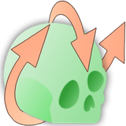

ASO
ASO cherche une rotation rigide qui amène un CBCT ou un scan intra-oral dans le repère d'un cas de référence (la « référence »), par une initialisation à 3 points suivie d'un ICP : jamais un recalage optimal par moindres carrés. Cette page explique comment, étape par étape, avec les maths. Les fichiers, les lignes, les blocs de code et les pièges sont sur la page de code.
Deux bases de code. Cette page décrit le module Slicer legacy (SlicerAutomatedDentalTools à 3c67957, 2026-10-26). Le portage VISOR, qui exécute le même outil sur un serveur, est décrit dans ASO sur VISOR. Quand VISOR diffère, une phrase le signale.
Vue d'ensemble : ce qui entre, ce qui sort
Un scan peut être dans n'importe quelle pose dans son fichier. ASO trouve la rotation qui l'amène sur un patient de référence déjà orienté, à l'aide de quelques points anatomiques que les deux partagent. Il travaille sur deux modalités et, pour chacune, en deux modes.
| CBCT | Scan intra-oral (IOS) | |
|---|---|---|
| Entrée | un scan de la tête ; le mode semi exige aussi des fichiers de landmarks | maillages des dents supérieures et inférieures ; le mode semi exige aussi des fichiers de landmarks |
| Mode automatique | landmarks prédits par ALI_CBCT | centroïdes des dents, après une segmentation des couronnes |
| Méthode | un premier alignement à partir de trois points, puis un ICP rigide | |
| Sortie | le scan ou maillage orienté, les landmarks déplacés, et une transformation | |
1. Situation dans la chaîne
Rien dans le dépôt n'appelle ASO. ASO, en revanche, appelle six outils (trois côté CBCT, trois côté IOS), et AREG_IOS consomme directement sa sortie : il cherche le fichier de transformation écrit par ASO et le compose avec sa propre matrice pour produire une seule matrice du scan brut au scan recalé. En IOS, les points d'ancrage ne sont pas des landmarks prédits mais les centroïdes des dents ; ALI_IOS n'est jamais appelé.
Legacy uniquement. Dans VISOR, ASO appelle un seul outil, ALI_CBCT, et est appelé par quatre (voir la page VISOR).
_SegOr.tfm). Les boîtes mènent aux sections ci-dessous.2. Fichiers en jeu
Un widget (interface, téléchargements, enchaînement des modules en ligne de commande, conda), deux auxiliaires qui construisent les paramètres, et quatre modules en ligne de commande : un pour recentrer, un pour orienter un CBCT, un pour l'IOS par centroïdes, un pour l'IOS par landmarks. Tous passent par le Python propre de Slicer ; seule la segmentation des couronnes passe par un environnement conda. Aucun n'a besoin d'un GPU : c'est du VTK et du SimpleITK. Une partie du code vit désormais dans la couche partagée ADTLib.
Dans le codeLes fichiers et l'endroit où chacun s'exécute3. Le principe géométrique commun
La cible n'est pas un repère analytique (« plan occlusal = z = 0 ») mais un cas de patient de référence, téléchargé depuis une version publiée : un scan et des fiduciaux pour le CBCT, deux maillages et deux fichiers de landmarks pour l'IOS. Le choix du repère est ainsi dans les données : les références Occlusal-and-midsagittal et Frankfurt-and-midsagittal sont deux références différentes, et le même code produit deux orientations différentes.
Dans les deux moteurs, l'estimation suit le même schéma en deux temps (le mode IOS automatique place avant lui un alignement des mâchoires sur les centroïdes des dents, section 5.1) :
- Une initialisation à 3 points : une translation suivie de deux rotations autour d'axes construits à la main, jamais un ajustement par moindres carrés ;
- un ICP rigide sur les nuages de points d'ancrage, pour affiner.
C'est le point à retenir : la matrice n'est pas une solution optimale au sens des moindres carrés sur N correspondances. Elle est construite par des rotations successives sur un triplet choisi, puis polie par un ICP qui réapparie les points au plus proche voisin plutôt que par étiquette.
- transformation 1
7.37° - transformation 2
2.76° - transformation 3
1.70° - transformation 4
0.165 mm
4. ASO_CBCT
4.1 Les deux modes
| Semi-Automated | Fully-Automated | |
|---|---|---|
| Entrée | scans + fiduciaux | scans seuls (ou DICOM) |
| Étapes | l'orientation seule | recentrage, puis prédiction des landmarks, puis l'orientation |
| Dossier de travail | le dossier de l'utilisateur | deux dossiers temporaires |
Le mode automatique n'est donc que le mode semi précédé de la génération des landmarks manquants.
4.2 PRE_ASO_CBCT : recentrage, plus de réseau calculé
Malgré son nom et ses six arguments, ce module ne fait plus qu'une seule chose : recentrer le volume. Le réseau de pré-orientation dont il tire son nom est déconnecté ; son code d'entraînement et ses poids subsistent, téléchargés et validés pour rien.
Le volume est déplacé de sorte que son centre se trouve sur l'origine du système de coordonnées. Seule l'origine stockée change : la taille, la taille des voxels et les voxels ne changent pas. C'est ce qui permet d'appliquer toute rotation ultérieure autour de l'origine.
- cle centre du volume, en millimètres
- Xla conversion d'une position de voxel en millimètres
- Nla taille du volume, en voxels
- o, o′l'origine stockée (le coin de la grille) avant et après
Illustration : la boîte et sa position sont inventées. Les deux formules sont celles du code.
Aucune interpolation réelle n'a lieu, seule l'origine physique bouge. C'est le prérequis de l'orientation, où la rotation est appliquée autour de l'origine. Le module écrit aussi une transformation contenant la translation, non inversée, alors que c'est son inverse qui a été appliquée au volume.
Dans le codeLe code de recentrage, les arguments morts, le repli DICOM cassé4.3 ALI_CBCT : le fournisseur de landmarks prédit
Appelé sur le dossier temporaire, avec des constantes codées en dur (deux échelles, 1 mm puis 0,3 mm, un champ de vue de 64³ voxels autour de l'agent). ALI_CBCT est un système d'agents de recherche à deux échelles ; il écrit un fichier de landmarks par groupe anatomique, en LPS. Les poids sont téléchargés un par landmark. La première chose que fait le module d'orientation est de recoller les fichiers par groupe en un seul par patient, et de supprimer les sources.
Dans le codeLes constantes passées à ALI_CBCT et la fusion4.4 SEMI_ASO_CBCT : l'orientation calculée
a) Élagage des landmarks aberrants. La matrice complète des distances et celle des directions entre tous les landmarks du scan et ceux de la référence sont comparées. Un landmark est écarté s'il diverge de plus de 15 mm ou de 0,4 rad trop souvent ; une paire très cohérente (sous 0,1 rad) compense une paire douteuse. L'analyse porte sur tous les landmarks du fichier, pas seulement ceux cochés.
b) Le triplet optimal. Des triplets (A, B, C) sont tirés au hasard, l'initialisation est lancée pour chacun, et celui qui minimise la distance moyenne finale est gardé. La borne est le nombre de triplets distincts ou 2500 tirages, selon ce qui arrive en premier.
Trois landmarks (A, B, C) suffisent pour construire l'alignement grossier, mais lesquels ? Le legacy tire les triplets au hasard : chaque tirage choisit trois landmarks l'un après l'autre, un triplet déjà vu est ignoré, l'alignement que donne chaque nouveau triplet est mesuré, et le triplet qui laisse la distance moyenne la plus petite à la référence est gardé. Le tirage s'arrête quand tous les triplets ordonnés ont été vus ou après 2500 tirages, selon ce qui arrive en premier. Les tirages ne sont pas initialisés par une graine. Avec 7 landmarks (210 triplets), 2500 tirages les verront presque toujours tous ; avec 14 (2184 triplets), ce n'est pas possible, et deux exécutions sur les mêmes données peuvent alors garder des triplets différents.
- n, Nle nombre de landmarks, et de triplets ordonnés (les cellules ; la borne de la recherche)
- Sles triplets distincts tirés jusqu'ici (les cellules remplies ; une cellule barrée est un doublon, qui est ignoré)
- d̄la distance moyenne à la référence après l'alignement grossier fait à partir de ce triplet ; la courbe est la meilleure valeur vue jusqu'ici, et la cellule cerclée est le meilleur triplet
Illustration : le nombre de cellules, les tirages et les distances sont inventés. Les vrais tirages ne sont pas initialisés par une graine, et le vrai nombre de triplets est n(n−1)(n−2).
c) L'initialisation comporte trois étapes : une translation de A sur son homologue, une rotation autour du produit vectoriel des deux vecteurs repliés, et un roulis autour de l'axe qui vient d'être aligné. Ses maths sont à la section 4.5. La translation est volontairement exclue de la matrice renvoyée : elle sert à calculer les rotations, pas à déplacer le volume.
d) L'ICP. Un ICP rigide, 1000 itérations, qui commence par faire coïncider les centroïdes ; sa translation est ensuite mise à zéro.
L'ICP affine l'alignement. À chaque pas, chaque point du scan est apparié à son point le plus proche de la référence, quelle que soit son étiquette, puis le scan est déplacé rigidement pour s'ajuster à ces paires (un ajustement par moindres carrés des paires, fait dans VTK). L'appariement est refait, et l'erreur diminue. L'exécution commence par faire coïncider les centres des deux ensembles de points et fait au plus 1000 itérations (100 en IOS). Comme il apparie par la distance, un appariement croisé peut se verrouiller quand deux landmarks sont proches, comme une paire gauche-droite.
- piles points du scan
- qjles points de la référence
- c(i)le point de la référence le plus proche de pi : les lignes en pointillés
- R, tun mouvement rigide ; en CBCT la translation est mise à zéro ensuite, et la barre à droite est l'erreur moyenne
Illustration : les points 2D sont inventés, et l'image rejoue son propre appariement et son propre ajustement, pas le fonctionnement interne de VTK. Les deux formules sont la définition standard de l'ICP ; le code ne fait qu'appeler la transformation ICP de VTK en mode corps rigide.
e) Composition. Les rotations sont composées, la transformation de recentrage est ajoutée, et le tout est inversé. Le résultat final est une rotation pure autour de l'origine du monde. C'est cohérent parce que le premier module a centré le volume sur cette origine, et c'est précisément ce qui manque au mode semi.
Le volume orienté est rééchantillonné sur sa propre grille : même taille, même taille de voxel, interpolation linéaire. Le volume tourne donc dans sa boîte, et tout ce qui sort de la boîte est perdu (le contour en pointillés). En dehors du volume d'origine, la valeur est 0.
- Iinle volume recentré
- Iout, boxle volume orienté, sur la même grille (la boîte)
- Tl'inverse des rotations
- xun voxel de la sortie
Illustration : la rotation de 38 degrés et la taille de la boîte sont inventées.
f) Sorties. Dans le dossier de sortie, avec l'arborescence du dossier d'entrée : le volume réorienté (toujours en .nii.gz quel que soit le format d'entrée), les landmarks tournés (en LPS), et la transformation. Les trois écritures sont sautées si le fichier existe déjà : relancer sur un dossier de sortie non vide ne réécrit rien et se termine quand même en succès.
La chaîne ASO_CBCT, étape par étape
T1 : un CBCT dans une pose quelconque
Mode automatique
- PRE_ASO_CBCT recentre le scan calculé : il n'y a plus de réseau ici une translation, écrite en .tfm
- ALI_CBCT prédit les landmarks d'orientation prédit .mrk.json, LPS
- SEMI_ASO_CBCT ajuste ces landmarks sur ceux d'une référence : initialisation à 3 landmarks, puis un vtkIterativeClosestPointTransform rigide, 1000 itérations calculé <pat>_<suffix>_transform.tfm
Mode semi-automatique
- l'opérateur fournit les landmarks : les étapes 1 et 2 sont sautées, l'étape 3 est inchangée même .tfm
Après l'étape 3, le plan médio-sagittal se trouve sur x = 0. C'est la condition sur laquelle repose chaque module en aval : VFACE fait son miroir autour de ce plan exact, et AREG_CBCT appelle cette même chaîne comme son propre amont. Les matrices sont écrites en détail au §4.5.
4.5 L'orientation, écrite en toutes lettres
Tout ce qui précède est de la prose sur du code. Voici la même chose en arithmétique, parce que deux choix d'ASO ne deviennent visibles qu'une fois écrits. Notation : est le landmark A sur le scan à orienter, le même landmark sur la référence.
1. Translation sur le premier landmark : calculée, puis jetée. Le volume n'est jamais translaté : le premier module l'a déjà centré sur l'origine.
2. Première rotation. Lisez bien les barres : ce sont des valeurs absolues composante par composante, pas une norme. Les deux vecteurs sont repliés dans l'octant positif avant que l'angle ne soit pris, donc ce qui suit est l'angle entre les vecteurs repliés, qui n'est pas l'angle entre les vrais vecteurs. Dans le code, les deux vecteurs sont d'abord divisés par leur plus grande composante, une mise à l'échelle positive qui s'annule.
La première rotation tourne le vecteur premier-deuxième du scan vers celui de la référence. Avant que l'angle ne soit pris, les deux vecteurs sont repliés dans le quadrant positif (octant, en 3D) en prenant la valeur absolue de chaque composante. Replier n'est pas une norme, et cela change l'angle : une paire pointant dans un sens et son homologue de la référence pointant dans le sens opposé donnent le même vecteur. L'angle et l'axe viennent des vecteurs repliés, mais la rotation elle-même est appliquée aux vrais points.
- pA, pB, v1les landmarks du scan, et leur vecteur replié
- qA, qB, v2les mêmes landmarks sur la référence, et leur vecteur replié
- θ1l'angle dont tourne la première rotation ; l'arc en pointillés est le vrai angle, avant repliement
- a1l'axe, perpendiculaire aux deux vecteurs repliés
Illustration : les deux vecteurs sont inventés, et une opération 3D est dessinée en 2D. Le vecteur dessiné est le vecteur replié. Les vrais vecteurs tournent du même angle, et n'arrivent sur ceux de la référence que s'ils se trouvent déjà dans l'octant positif.
3. Deuxième rotation. Son axe n'est pas un produit vectoriel mais le vecteur premier-deuxième tel qu'il se présente après la première rotation, replié de nouveau par la valeur absolue : un roulis autour de cet axe, avec un angle issu d'un troisième landmark.
Après la première rotation, il reste un degré de liberté : un roulis autour du vecteur premier-vers-deuxième tel qu'il est maintenant. On le voit ici par le bout, l'axe pointant vers le lecteur. Un troisième landmark donne l'angle. L'axe est la valeur absolue de ce vecteur tourné : le roulis ne conserve donc ce qu'a fait la première rotation que si le vecteur n'a aucune composante négative (ou aucune positive) ; sinon il tourne autour de la copie repliée, qui pointe ailleurs.
- pA, pB, pCles landmarks du scan
- qA, qCles landmarks de la référence
- θ2l'angle du roulis
- R1la première rotation, sous forme de matrice 3×3 appliquée aux vecteurs
- a2l'axe du roulis : le vecteur premier-vers-deuxième tourné, replié par la valeur absolue
Illustration : les positions des landmarks sont inventées. Le code applique l'angle non signé dans le sens antihoraire autour de l'axe ; le dessin prend le chemin le plus court.
4. La matrice de rotation est la formule de Rodrigues à base de quaternion, identique à celle de FlexReg et d'ASO_IOS. Deux inversions de signe s'annulent : la partie vectorielle porte un moins, et la matrice est écrite transposée par rapport à la forme usuelle du quaternion. Le résultat est la rotation ordinaire de l'angle autour de l'axe.
Chaque rotation est transformée en matrice par la forme quaternion de la formule de Rodrigues. L'angle et l'axe donnent quatre nombres, et la matrice est construite à partir d'eux. Le résultat est la rotation ordinaire de l'angle autour de l'axe ; le signe moins et la disposition transposée s'annulent. Montré : cinq points tournés autour d'un axe à mesure que l'angle grandit.
- θ, âl'angle, et l'axe unitaire (la droite passant par les points)
- α, β, γ, δles quatre nombres qui représentent la rotation
- Rla matrice de rotation 3×3 ci-dessous ; un point p devient R p
- tripletles trois landmarks du triplet, tournés avec le reste ; les deux autres points suivent
Illustration : les cinq points et l'axe sont inventés. La matrice est bien calculée à partir des formules ci-dessus et du texte ci-dessous.
La matrice, écrite à partir de ces quatre nombres :
5. Composition. L'ICP ne contribue que par une rotation : sa colonne de translation est mise à zéro. Le composé est donc une rotation pure autour de l'origine du repère.
Pourquoi ce n'est pas un ajustement. Avec N landmarks appariés, il existe une rotation en forme close qui minimise la somme des carrés des distances, Kabsch, par la décomposition en valeurs singulières de la covariance croisée :
avec D = diag(1, 1, det(V U⊤)) qui protège contre une réflexion. ASO ne calcule rien de tel. Il construit deux rotations à partir d'un triplet, garde le triplet qui obtient par hasard le meilleur score sur 2500 tirages au plus, et confie le résultat à un ICP qui réapparie les points par plus proche voisin plutôt que par étiquette. C'est une recherche, pas une solution. L'ICP lui-même ajuste bien une rotation par moindres carrés à chaque étape, mais sur des paires qu'il choisit par la distance, pas sur les landmarks étiquetés. Dans VISOR, la recherche de triplet est exhaustive quand il y en a assez peu, sinon initialisée par une graine.
Dans le codeLes mêmes maths, l'encadré sur Kabsch5. ASO_IOS
5.1 Mode automatique : centroïdes des couronnes
a) Contournement de la segmentation. Chaque maillage est ouvert et examiné pour y chercher un tableau de labels de dents. Les maillages déjà segmentés sautent le réseau ; les autres passent par la segmentation. b) La segmentation prédite, via conda : un réseau multi-vues qui numérote les dents selon le schéma universel 1–32. ASO n'écrase pas le maillage d'entrée : la copie segmentée atterrit dans un dossier temporaire. L'étape est synchrone et bloquante.
c) L'orientation calculée, le cœur. Les 3 ou 4 dents choisies sont triées en gauche, milieu(x) et droite d'après la numérotation universelle ; chaque dent devient la moyenne des sommets portant son label ; avec 4 dents, les deux centroïdes du milieu sont moyennés, si bien qu'on revient toujours à trois points.
Sans fichiers de landmarks, chaque dent est réduite à un point : la moyenne des sommets qui portent son label. Seuls ces points, trois ou quatre dents, servent ensuite, jamais la géométrie des couronnes. Cette étape suppose que les dents soient déjà étiquetées sur le maillage : en mode automatique, la segmentation de l'étape précédente s'en charge, et PRE_ASO_IOS ne segmente pas lui-même.
- ctle centroïde de la dent t ; les trois grands sont les dents utilisées
- Vtles sommets portant le label de la dent t (les points)
Illustration : les sommets sont des points aléatoires, et seules neuf dents sont dessinées. La formule est celle du code.
L'alignement grossier d'une mâchoire utilise ses trois points (gauche, milieu, droite ; deux dents du milieu moyennées quand quatre sont cochées). D'abord, le plan des trois points est tourné sur le plan de la référence. Ensuite, la mâchoire est tournée dans ce plan pour correspondre à la direction gauche-droite. Enfin, les centroïdes sont amenés à coïncider.
- n, scanla normale (ramenée à une longueur unitaire) du plan des trois centroïdes du scan
- refla même chose pour la référence
- g, m, dcentroïdes gauche, milieu et droit
- θ, al'angle et l'axe qui amènent une normale sur l'autre
Illustration : les trois centroïdes du scan et de la référence sont inventés. Le dessin tourne la mâchoire autour du milieu de ses trois points ; le code tourne autour de l'origine puis décale les centroïdes ensemble, ce qui aboutit au même endroit.
Pas de mise à l'échelle. d) Le raffinement. L'ICP ne voit jamais que ces 3 ou 4 centroïdes, jamais la géométrie des couronnes : la même initialisation que pour CBCT (avec valeurs absolues et un roulis), puis un ICP rigide à 100 itérations au lieu de 1000, dont la translation n'est pas mise à zéro. La translation de l'initialisation est elle aussi conservée dans la matrice, ce que CBCT ne fait pas. La matrice finale est l'ICP composé après l'alignement de la mâchoire. À l'intérieur du recalage fin, en revanche, le legacy multiplie la matrice de l'initialisation du triplet et la matrice de l'ICP dans l'ordre de la liste, ce qui place la matrice du triplet à gauche ; VISOR les multiplie dans l'autre sens, l'ordre dans lequel elles sont appliquées. L'effet n'a pas été mesuré.
5.2 Mode semi : landmarks fournis calculé
Même mécanique : les dictionnaires de landmarks sont filtrés par nom, puis l'initialisation et l'ICP s'exécutent sur les seuls landmarks nommés, sans segmentation ni alignement de mâchoire. Les noms de landmarks sont construits dans l'interface par dent et par type (occlusal, ou cervical), et répartis par arcade d'après leur première lettre. La matrice obtenue à partir des landmarks est ensuite appliquée à tout le maillage.
Dans le codeSelectKey et les noms de landmarksLa chaîne ASO_IOS, étape par étape
un scan intra-oral : un maillage de surface, pas de volume
Mode automatique : centroïdes des couronnes
- __BypassCrownseg__ cherche un tableau PredictedID, UniversalID ou Universal_ID : un maillage déjà segmenté saute le réseau copié sous <nom>_Seg
- DentalModelSeg étiquette les couronnes, via conda run -n shapeaxi prédite <nom>_Seg.vtk, dans un dossier temporaire
- le centroïde de chaque couronne étiquetée devient un landmark calculé un point par dent
- PRE_ASO_IOS puis un ICP rigide sur les centroïdes du gold standard calculée le maillage orienté + son .tfm
Mode semi : landmarks fournis
- SelectKey filtre les dictionnaires de landmarks par nom, puis InitIcp et vtkICP s'exécutent sur ces seuls noms : ni segmentation, ni PrePreAso calculée le même .tfm
Contrairement à FlexReg, ASO n'écrase pas le maillage d'entrée : overwrite = "0" et suffix = "Seg", si bien que la segmentation atterrit dans un dossier temporaire.
5.3 Occlusion
Une case à cocher force une seule arcade : l'arcade choisie pilote l'orientation, et la même matrice est appliquée à l'arcade opposée pour préserver la relation d'occlusion. Les fichiers supérieurs et inférieurs sont appariés par nom, à partir de quelques marqueurs reconnus. Quand aucun marqueur n'est trouvé, le legacy traite silencieusement le fichier comme inférieur ; VISOR le refuse.
Dans le codeLa mâchoire directrice et le défaut sur Lower5.4 Sorties IOS
| Fichier | Contenu |
|---|---|
le maillage avec le suffixe, .vtk | le maillage orienté ; extension forcée à .vtk si elle est inconnue |
<patient>_SegOr.tfm | auto uniquement, un nom fixe quel que soit le suffixe |
matrix_<name>.npy | semi uniquement, la matrice 4×4 brute |
| un fichier d'erreur par cas en échec | dans un sous-dossier Error/ |
La transformation est écrite inversée (convention fixe-vers-mobile d'ITK), comme transformation affine, sans conversion LPS-RAS : les maillages sont lus et écrits dans les coordonnées propres du fichier. C'est cohérent de bout en bout avec AREG_IOS, qui la relit telle quelle. VISOR garde la convention et change le nom du fichier.
Dans le codeLes écrivains et la convention tfm6. Comparaison avec l'orientation de FlexReg
L'orientation de FlexReg et l'alignement de mâchoire d'ASO_IOS sont le même algorithme, copié-collé. Ils diffèrent sur trois points :
| ASO_IOS | FlexReg | |
|---|---|---|
| Cible | les centroïdes du maillage gold | trois points codés en dur |
| Dents | 3 ou 4 choisis par l'opérateur | 3, 5, 12, 14 codées en dur (UR6, UR4, UL4, UL6) |
| Retour | le maillage et la matrice | le maillage seul |
Conséquence pratique : FlexReg produit un repère canonique et reproductible (plan occlusal proche de z = 0, +y antérieur), ce qui lui permet de raisonner en 2D dans le plan XY. ASO_IOS produit une orientation relative à un patient de référence : rien ne garantit que le plan occlusal atterrisse sur z = 0, et FlexReg n'a pas de raffinement ICP là où ASO en ajoute un.
Dans le codeLes fonctions identiques7. Ce qui est prédit et ce qui est calculé
| Bloc | Nature |
|---|---|
| CBCT recentrage | géométrique une translation |
| landmarks CBCT (mode auto) | réseau agents de recherche multi-échelles, ALI_CBCT |
| Élagage des landmarks aberrants | géométrique distances et angles |
| Triplet optimal et rotations | géométrique recherche aléatoire, jusqu'à 2500 tirages |
| Affinage | géométrique ICP rigide |
| Segmentation des couronnes IOS | réseau multi-vues, DentalModelSeg |
| Centroïdes des dents | géométrique moyenne des sommets |
| Orientation de l'IOS | géométrique deux rotations et une translation |
Les deux réseaux appelés sont pré-entraînés et ne servent qu'à fournir des points d'ancrage. Le pré-orienteur appris d'ASO_CBCT a été déconnecté.
8. Environnement
Deux régimes distincts. Les modules en ligne de commande s'exécutent dans le Python de Slicer, que le widget complète avec tout ce qui manque (itk, pytorch_lightning, dicom2nifti, pydicom, monai, et une version de torch choisie pour le GPU). L'environnement conda (Python 3.12, partagé avec ALI, AREG, FlexReg et DOCShapeAXI) n'est mis en place que pour le mode IOS automatique. ASO lui-même n'exige aucun GPU ; la segmentation des couronnes, si. Dans VISOR, rien n'est installé dans Slicer et l'environnement d'ASO n'a pas de torch.
Dans le codeCe qui est installé où, l'environnement conda9. Pièges et points fragiles
Chaque point est vérifié dans le code et décrit, avec sa preuve, sur la page de code.
- Le mode semi n'a pas de recentrage, si bien qu'un volume décentré se retrouve hors de son propre champ de vue (et l'ancienne exigence d'un fichier de transformation est corrigée). Preuve.
- La fusion des landmarks supprime des fichiers du dossier d'entrée. Preuve.
- Le repli DICOM est cassé. Preuve.
- Le système de coordonnées des fichiers de landmarks n'est jamais vérifié. Preuve.
- Nombre minimal de landmarks incohérent (3 dans l'interface, 4 en pratique). Preuve.
- Rien n'est réécrit si la sortie existe. Preuve.
- Les identifiants de patient divergent entre ASO et AREG, si bien que la transformation d'ASO n'est jamais retrouvée pour certains noms. Preuve.
- Un maillage sans marqueur de mâchoire est silencieusement traité comme inférieur. Preuve.
- Bibliothèques installées pour rien, au risque d'écraser le torch d'un autre module. Preuve ; roues pytorch3d.
- L'ICP réapparie par plus proche voisin, et l'initialisation replie les vecteurs par des valeurs absolues : il ne faut rien conclure de la géométrie de cette étape prise isolément. Pourquoi ce n'est pas un ajustement.
- Le code mort, un fichier de transformation non inversé et les suffixes de point temporel (seuls
_T1et_T2sont coupés) sont listés sur la page de code.
10. Littérature
L'article de référence d'ASO_CBCT est Automated Orientation and Registration of Cone-Beam Computed Tomography Scans (Anchling, Hutin, Cevidanes et al., Lecture Notes in Computer Science, 2023). Sa description correspond au code : ALI_CBCT identifie les landmarks quelle que soit l'orientation d'entrée, puis l'orientation s'obtient « en alignant d'abord 3 landmarks choisis au hasard, puis en affinant par ICP ». Erreurs rapportées : moins de 3° et 2 mm face à des experts. L'article ne mentionne pas le réseau de pré-orientation, ce qui concorde avec le fait qu'il n'est plus connecté.
Pour ALI_CBCT lui-même : Automatic landmark identification in cone-beam computed tomography (Gillot et al., Orthodontics & Craniofacial Research, 2023).
ASO_IOS n'a pas d'article propre. Le texte publié le plus proche est AReg IOS: Automatic Registration on IntraOral Scans (Hutin, Anchling, Cevidanes et al., LNCS 2023), qui décrit l'alignement initial par centroïdes de dents partagés , c'est-à-dire exactement l'alignement de mâchoire. Le reste (choix des dents par l'opérateur, raffinement ICP sur 3 centroïdes, mode occlusion) est un développement interne non publié.
- ASO (dépôt d'origine, Anchling)
- ASO (DCBIA-OrthoLab)
- Automated Orientation and Registration of CBCT Scans, LNCS
- PubMed 38770027
- Automatic landmark identification in CBCT, Gillot 2023
- Projet ASO_CBCT, NA-MIC Project Week 38
- SlicerAutomatedDentalTools
Références complètes, PDF récupérés et liens à vérifier : SOURCES.html.